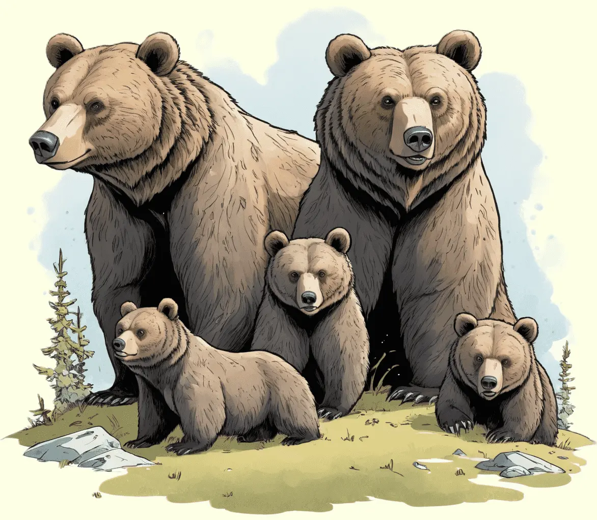

Der Grizzlybär, ein imposanter Bewohner der nordamerikanischen Wildnis, beeindruckt mit seinem kräftigen Körper und seinen krallenbewehrten Tatzen.
Erforsche die faszinierende Welt dieses mächtigen Raubtiers und entdecke, wie es in den Wäldern und Bergen lebt.

Beeindruckende Giganten der Natur
Grizzlybären, auch als Nordamerikanische Braunbären bekannt, sind beeindruckende Säugetiere und gehören zu den größten Landraubtieren der Welt. Ihre charakteristische braune Fellfarbe und die markanten Schulterhöcker machen sie leicht erkennbar. Diese Giganten der Wildnis sind vor allem in den Bergregionen Nordamerikas beheimatet, wo sie in verschiedenen Lebensräumen, von dichten Wäldern bis hin zu offenen Tundren, anzutreffen sind. Mit kräftigen Krallen, einem ausgezeichneten Geruchssinn und einer beeindruckenden Kraft sind Grizzlybären erfolgreiche Jäger und ernähren sich von einer vielfältigen Diät, die von Pflanzen über Beeren bis hin zu Fischen und kleinen Säugetieren reicht.
Grizzlybären haben eine imposante Größe, können bis zu 3 Meter hoch auf ihren Hinterbeinen stehen und ein Gewicht von mehreren hundert Kilogramm erreichen. Trotz ihres massiven Erscheinungsbildes sind sie erstaunlich agil und können sowohl schnell rennen als auch geschickt klettern. Diese majestätischen Riesen sind auch für ihre Fähigkeit bekannt, in Flüssen nach Lachsen zu fischen. Ihre Anpassungsfähigkeit an verschiedene Lebensräume und ihre entscheidende Rolle im Ökosystem machen Grizzlybären zu faszinierenden Bewohnern der nordamerikanischen Wildnis.
Solitäre Jäger mit instinktiver Brutpflege
Grizzlybären sind oft als Einzelgänger unterwegs und meiden in der Regel den Kontakt zu anderen Artgenossen. Sie sind territorial und markieren ihr Revier durch Kratzspuren an Bäumen oder das Ausscheiden von Duftmarken. Trotz ihrer selbstständigen Lebensweise können Grizzlybären während der Lachssaison an Flüssen versammelt sein, um sich an diesem reichhaltigen Nahrungsangebot zu laben. Während der Paarungszeit zeigen die Männchen beeindruckende Rituale, um die Aufmerksamkeit der Weibchen zu erlangen.
Grizzlybären sind für ihre instinktive Brutpflege bekannt. Die Weibchen gebären alle zwei bis drei Jahre, und die Jungen, sogenannte Grizzlykinder, werden liebevoll aufgezogen und von ihrer Mutter geschützt. Die Fortpflanzung erfolgt in einem Versteck, das die Bärin für ihre Jungen vorbereitet. Das soziale Verhalten und die Instinkte der Grizzlybären, von der Territorialität bis zur fürsorglichen Brutpflege, verleihen diesen majestätischen Wildtieren eine besondere Stellung in der Natur Nordamerikas.